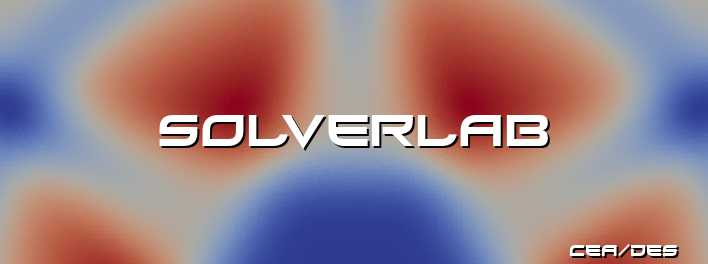

SOLVERLABGUI¶
Introduction¶
SOLVERLABGUI is a GUI frontend to the SOLVERLAB library, integrated inside the SALOME platform. This documentation gives information about how to use the GUI frontend only. For any information about the SOLVERLAB library, please consult its proper documentation.